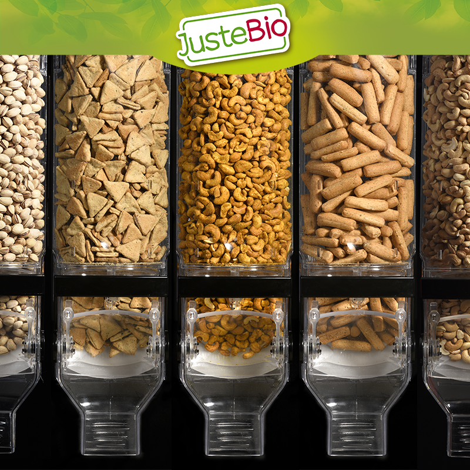

Si vous êtes fatigué, souvent enrhumé ou sujet à des infections, vous avez peut-être besoin de renforcer votre système immunitaire. Une alimentation saine est indispensable au bon fonctionnement de l’organisme et vous permettra de le défendre contre les affections extérieures. En effet, il est désormais reconnu que certains nutriments aident à renforcer le système immunitaire. Le fer, le cuivre, le sélénium et la vitamine C seront des alliés précieux. On retrouve ces nutriments dans de nombreux fruits secs, fruits à coque, graines et légumineuses. Choisissez-les BIO de préférence.
En cette période, nous avions envie de vous proposer une recette facile à faire et qui va régaler petits et grands : la recette de la tarte aux fruits secs bio. Simple, rapide et tellement gourmande, elle permet également de booster son système immunitaire.
Partenaire idéale de vos apéros depuis plusieurs années, la Pistache Bio est plus que jolie. Elle est aussi délicieuse et a de nombreuses vertus. D’où vient-elle ? Quelle est son histoire et quels sont ses bienfaits ? On vous en dit plus tout de suite.

Découvrez nos nouveaux produits. 6 saveurs plus épicées et aromatisées pour vous permettre des apéros gourmands en famille ou entre amis : amandes barbecue, cacahuètes grillées salées, mini-gressins romarin, triangles olives et herbes de Provence, noix de cajou curry, et mélange poivre et sel. Et 2 mélanges pour accompagner vos salades : un mélange 100% graines et un original mix. Retrouvez les également sur notre vrac store.